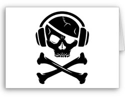

Please contact techsupport@regis.edu if you need assistance or to report any problems.
Please contact techsupport@regis.edu if you need assistance or to report any problems.
© 2010 Regis University. All rights reserved.

The Recording Industry Association of America (RIAA) is the trade group that represents the U.S. recording industry. Its members create, manufacture, and distribute 85% of the legitimate sound recordings produced and sold in the United States.
Since 2003, the RIAA has taken legal action against more than 40,000 people, mostly for copyright infringement for illegally sharing or downloading music via the Internet. Some of the lawsuits threatened fines of tens of thousands of dollars. Alleged violators who challenged the RIAA in court risked being assessed crippling fines; thus, most settled out of court.
The RIAA justifies its strong antipiracy efforts as a means of both protecting the ability of the recording industry to invest in new artists and new music, and giving legitimate online music sharing services a chance to be successful. In addition, RIAA claims that each year the recording industry loses about $5 billion and retailers lose about $1 billion worldwide from music piracy. (Other sources cite different amounts, but still in the range of billions of dollars per year.) According to the RIAA:
Just as we must hold accountable the businesses that encourage theft, [the] individuals who engage in illegal downloading must also know that there are consequences to their actions. If you violate the law and steal from record companies, musicians, songwriters, and everyone else involved in making music, you can be held accountable.
In December 2008, the RIAA announced it was dropping its aggressive and highly controversial strategy of sending out prelitigation letters asking alleged music pirates to stop their copyright infringement and pay a certain dollar amount or go to court. The RIAA is switching to a graduated response program:
Reference: Reynolds, G. (2010). Ethics in Information Technology (3rd ed.). Boston, MA. Cengage.
 Please contact techsupport@regis.edu if you need assistance or to report any problems.
Please contact techsupport@regis.edu if you need assistance or to report any problems.
© 2010 Regis University. All rights reserved.